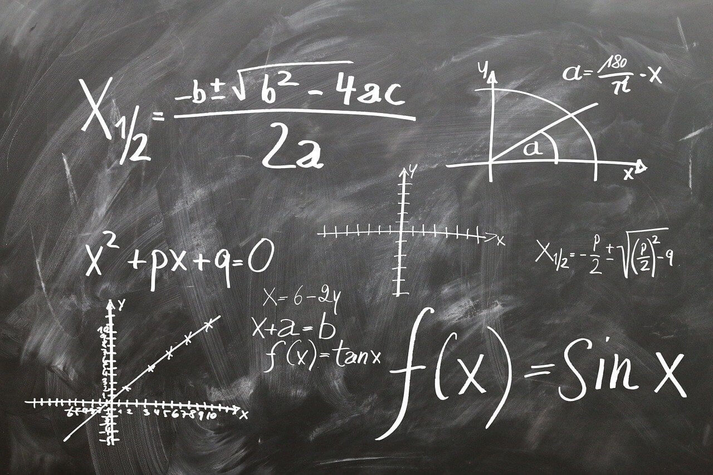

| Inicio |
Su importancia |
En la vida cotidiana |
Las matematicas |
Álgebra |
en sus ramas |
la Álgebra en las matematicas

En matemáticas, el álgebra es la rama que utiliza símbolos y letras, además de números, para representar cantidades y relaciones. Permite generalizar las operaciones aritméticas y resolver ecuaciones y problemas de manera más abstracta y flexible, en comparación con la aritmética, que se enfoca en números específicos.
El álgebra se define por:
Uso de símbolos y letras:
En álgebra, las letras (llamadas variables) representan valores desconocidos o cantidades que pueden cambiar.
Expresiones algebraicas:
Son combinaciones de números, letras y signos de operación (suma, resta, multiplicación, etc.).
Ecuaciones:
Son igualdades que contienen variables, y el objetivo es encontrar los valores de esas variables que hacen que la igualdad sea verdadera.
Operaciones algebraicas:
Son las mismas operaciones básicas de la aritmética (suma, resta, multiplicación, división), pero aplicadas a expresiones algebraicas.
Reglas y propiedades:
El álgebra se basa en reglas y propiedades que gobiernan las operaciones con expresiones algebraicas (como la propiedad conmutativa, asociativa, distributiva).
Abstracto:
El álgebra no se limita a números concretos, sino que se centra en estructuras y relaciones generales que pueden aplicarse a diferentes contextos.
Importancia del álgebra:
Resolver problemas:
Permite modelar y resolver problemas más complejos que los que se pueden resolver con aritmética.
Generalización:
Facilita la generalización de conceptos y la identificación de patrones en las matemáticas y otras ciencias.
Base para otras matemáticas:
Es fundamental para el estudio de otras ramas de las matemáticas, como el cálculo, la geometría analítica y el álgebra lineal.
Aplicaciones prácticas:
Se utiliza en diversas áreas, como la física, la economía, la ingeniería y la informática.
En resumen, el álgebra es una herramienta matemática poderosa que nos permite comprender y resolver problemas de manera más abstracta y general, utilizando un lenguaje simbólico que representa cantidades y relaciones.